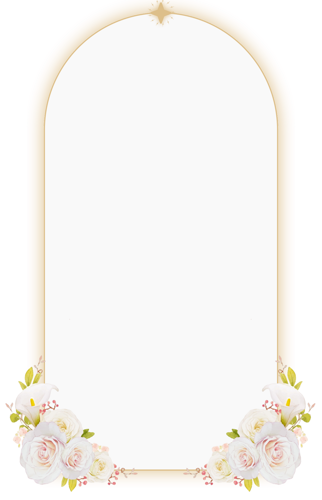
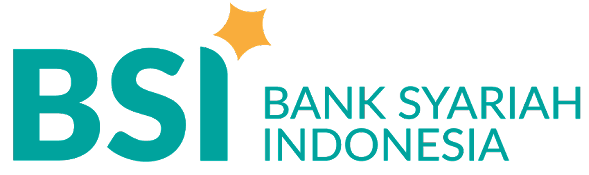

Assalamu'alaikum Warahmatullahi Wabarakatuh
Putri dari
Alm. Bapak Sahlani
& Ibu Jaenah
Putra dari
Alm. Bapak Jhon Endi Nv Batubara
& Ibu Ade Irma Suryani

Ahad
|28
Juni
|
2026
Akad Nikah
Pukul 09:00 WIB
Kp. Cigaroggol RT 06 RW 02 Taman Buah
Mekarsari, Cileungsi - Bogor
Resepsi
Pukul 10:00 WIB - Selesai
Kp. Cigaroggol RT 06 RW 02 Taman Buah
Mekarsari, Cileungsi - Bogor
Hitung Mundur Acara
Adab Walimah
Tanpa mengurangi rasa hormat, dimohon kepada para tamu undangan untuk memperhatikan hal-hal berikut:
Memperhatikan Waktu Sholat
Berpakaian Rapi & Sopan
Memperhatikan Adab Makan
Tidak Memfoto/ Video Pengantin Tanpa Izin
Tidak Berjabat dengan Non-mahrom
Kesan & Ucapan Pernikahan
Doa Restu Anda merupakan
karunia yang sangat berarti bagi kami.
Dan jika memberi adalah ungkapan tanda kasih Anda, Anda dapat memberi kado secara cashless.

Riswan Suhemy Batubara
7216449813
